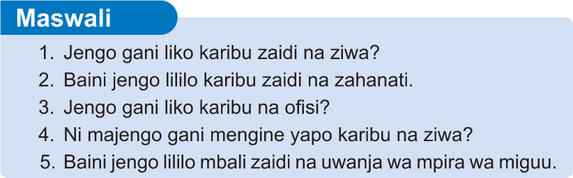

Kupitia ramani, unaweza kubaini umbali kutoka sehemu moja hadi nyingine kwa kufuata hatua zifuatazo;
-
(a) Kupima umbali kwenye ramani kutoka sehemu moja hadi nyingine; na
-
(b) Kubadili umbali wa kwenye ramani kuwa umbali halisi wa kwenye ardhi kwa kutumia skeli.
Upimaji huu unahusisha vitu vilivyonyooka na visivyonyooka. Upimaji huu unaweza kufanyika katika ramani za kidijitali na zisizo za kidijitali.
Upimaji wa umbali ulionyooka
Umbali ulionyooka katika ramani hupimwa kwa kutumia kipande cha karatasi, uzi, rula, bikari na skeli. Katika sehemu hii utatumia kipande cha karatasi, rula na skeli.
1. Kwa kutumia kipande cha karatasi
Hatua zifuatazo hutumika kupima umbali katika ramani kwa kutumia kipande cha karatasi na skeli:
(a) Chora mstari ulionyooka unaounganisha vituo viwili uliyopewa katika ramani, kwa mfano, kituo A na B kama inavyowasilishwa katika Kielelezo namba 4
Kielelezo namba 4: Mstari ulionyooka unaounganisha kituo A na B